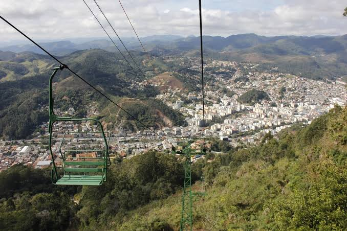

Nova Friburgo é uma linda cidade. Por isso, visite-a, você não irá se arrepender.
Para mais informações, entre em contato com nossos representantes de turismo e excurssões através de algum dos meios a seguir:
- E-mail: turismoNovaFriburgo@gmail.com
- Telefone: (22) 98723-0000
- Acesse também nossa página no Instagram: @turismoNovaFriburgo
Meios de contato:
